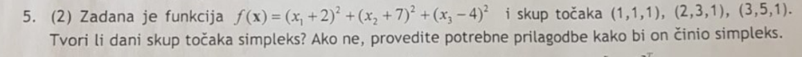

Stark izbacujes onu sa vrijednoscu nula najgora se izbacuje .. -6 je bolje od 0 jer minimiziramo funkciju ..
Da li netko ima ovaj zadatak postupak? Nisam našao ni jedan takav riješen primjer.
MI19 2.zad moze li netko potvrditi da je ovo tocno rj
enaiks Famoznih 13 koraka, rekao bih da je
enaiks Zar nije da kod unimodalnog uzimamo lambda a ne f(lambda), odnosno interval bi trebao bit [4,16]? Meni uz to na kraju ispadne da je lambda [10.334, 11.002].
enaiks Ne znam jel trazim na pravom mjestu, gdje se moze naci mi 2019?
 Ne jer imamo 3d fju, pa nam treba 4 tocke za simplex, i takoder ne jer te tri tocke leze na pravcu. Dakle kao prvo moramo jednu od te tri tocke pomaknuti po x ili y osi, i dodati jos cetvrtu tocku, koja ce imat z=2 npr?
Moze netko slikati postupak od 3.12? Nekako mi cudno ispada
temari u pravu si
Jel netko riješio ovaj? Šta tu uopće traže?
temari gradijentni spust = najbrži spust -> tako bar piše u trećoj domaćoj zadaći, a to možeš naći u videu 05 2 gdje je objašnjen sličan zadatak, a u videu 05 1 imaš za konjugirani smjer
temari Ima netko ovaj? Nije ni meni jasno kaj traže, početnu točku nisu ni zadali.
Jedino mi ima smisla možda da je za a) odgovor [0, 1] jer će u prvoj iteraciji doći usporedno s točkom minimuma.
temari jesi uspio rjesiti? moze postupak? jako me zbunjuje a)
Traženje maksimuma je ekvivalentno traženju minimuma funkcije -f(x), je li tako?
hi_doggy
ReyKenobi
ovo eksplicitno ogranicenje pretvoreno je u implicitno kroz x(y) kako je durasevic objasnio na predavanjima.. i sta sad s tim ogranicenjem? jel njega isto stavljamo u U(x) ili??
enaiks
ja sam napisao da je x1 funkcija od y, raspisao ju i naznacio da mi je “ * ” skracenica za to i onda sam svugdje umjesto x1 pisao “*”, te je onda U fja od x2 i y.
Števo
Ja sam pocetnu tocku “reverse engineero” tak da sam izracunao vektor gradijenta i rjesio jednadzbe s jednom nepoznanicom, dalje je samo klasican postupak pretrazivanja po pravcu (lambda)
Meni nije jasno kako se radi pod b)
Murin čini mi se dosta dugačak postupak za samo jedan bod
pod b) mislim da trebaš naći minimum s zadanim smjerom pretraživanja ali iz dvije različite početne točke, i onda vektor između te dvije točke minimuma ti je konjugirani smjer
Murin kolko ti ispadnu početna točka i lambda na kraju?
Murin Mislim da cak nije bitna pocetna tocka, ionako je iduci smjer okomit
Števo Zapravo i nije tak puno
2 parcijalne derivacije prilično jednostavnih funkcija, jedan sustav jednadžbi i to je to
al da bi mogao bod više, mogao bi, samo skužit ćeš sutra da ti svi ti zadaci pojedinačno imaju malo bodova
M̵̧̩͑̀͝î̶͍̉ć̴̝̾́̀o̶̺̟̣͂̽ mislio sam zapravo na ovaj drugi dio kad minimiziramo po lambdi jer ulazi pod kvadrate, al da uz kalkulator se i to brzo riješi